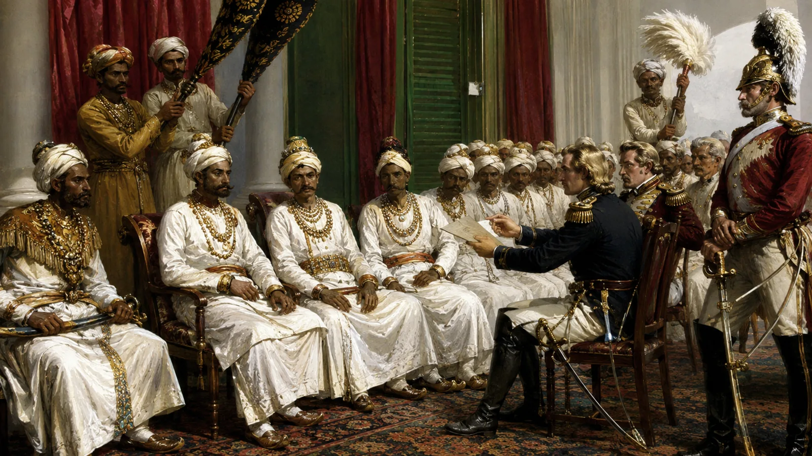

Signing of the Historic Treaty of Yandabo
24 February 1826 · The days of the Burmese

The King of Ava formally cedes all claims to Assam to the British East India Company, terminating 598 years of independent Ahom rule.
Sources have not yet been catalogued for this record.
People: Sir Archibald Campbell, Jogeswar Singha